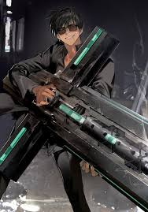

"We're nothing like God. Not only are our powers limited, but we are sometimes driven to become the devil himself."
About
- Full Name: Nicolas D. Wolfwood
- Alias: Nicolas the Punisher
- Status: Deceased
- Birthplace: No Man's Land
- Affiliation:Vash's Group (currently); Eye of Michael (formerly)
- Arsenal: Punisher
Appearance
Tall, handsome, & broad shouldered, Wolfwood is a man with tanned skin and black hair. His eye color varies from dark blue to gray depending on the iteration of the Trigun series. Typically wearing a simple black suit with a white button-down shirt and unbuttoned collar. He is rarely seen without smoking a cigarette.
Personality
Negative, Protective, Reserved, Pessimistic, Resigned, Cold and Prudent. Wolfwood is completely contradictory: a priest who kills and a man forced into evil without wanting to. His ideals are hyper-realistic. He's morally broken, and his morals fail when he meets Vash. He starts to feel like a demon by seeing Vash following his pacifist ideals. However, Wolfwood is not just a cold-blooded killer. He has people he cares about and tries to protect by doing everything, and he never kills without the risk of dying.
Abilities
Wolfwood is one of the best gunmen in No Man's Land, he holds his Punisher Cross, a cross that is both machine gun and rocket launcher, can be used as a shield or just as the holder of many mini pistols. Wolfwood is often seen holding mini pistols inside him, he keeps him wrapped in belted sheets. Between being an excellent gunman, he has automated healing, divine sensory abilities, a body like steel and advanced muscle mass, all thanks to the experiments performed on him by the Eye of Michael. The only downfall of all these abilities is the fact that he ages faster than a normal person.
Trivia
- According to the author of the Trigun series, the initial "D" in Wolfwood's name stands for "dangerous".
- The Punisher weighs a "hundred-and-so" kilograms. To manage this weapon, Wolfwood is claimed to have an "incredible sense of balance".
- Wolfwood's arsenal (like Vash) is represented by the title of the series with his Cross Punisher having three functions: a machine gun, a rocket launcher, and a compartment holding an array of handguns.